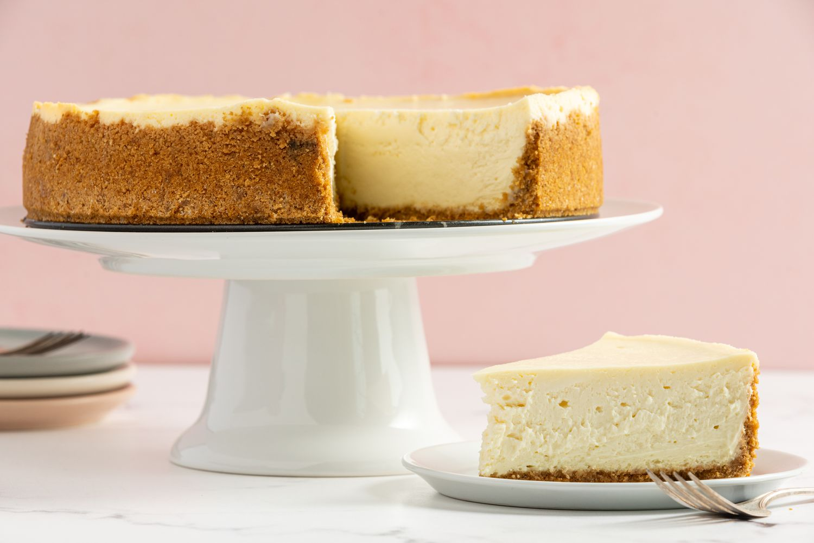

Classic Cheesecake

Description
Cheesecake is a dessert made with a soft fresh cheese, eggs and sugar. It may have a crust or base made of crushed cookies, graham crackers, or sometimes sponge cake. It may be baked or unbaked.
Additional flavors and visual appeal may be added by topping the finished dessert with fruit, whipped cream, nuts. cookies or other ingredients.
Ingredients
- Full fat cream cheese
- Full fat heavy whipping cream
- Full fat sour cream
- Graham Cracker Crust
- Sugar
- Eggs
Steps
- All ingredients should be out in the kitchen for at least 1-2 hours before starting.
- Pack in the Graham Cracker Crust tightly and pre-bake it.
- Throughly mix the cream cheese and sugar.
- Dont over whisk the eggs and heavy cream.
- Bake in a Water-Bath at low temperature.
- Cool it overnight.
- Decorate it with whipped cream.
- Serve and enjoy it!